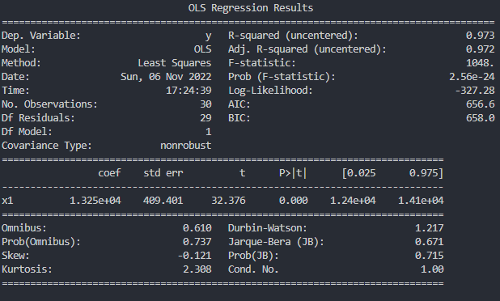

Confidence Interval
From the last section, we were able to find the coefficient and intercept of our linear equation using a sample dataset of 30 random employees.
\[ Intercept = 25792.20 \] \[ Coefficient= 9449.96 \] \[ SALARY = 9449.96(XP) + 25792.20 + ε \]
But this brought up another question; Is salary REALLY related to the years of experience of an employee? Is the relationship between the two variables strong enough to claim they are related? Are 30 random employees enough to determine this? How can we make sure these are the correct values?
You need to recall that you found the values by working with a small sample that was drawn from a much larger number of employees. Since we have only one sample to test with, the values for the coefficient and the slope will be more uncertain.
What can we do to make sure the values are valid?
Exercise 1: Checking More Samples
Suppose you were able to find over 10,000 records for employees within your company 😯! This is amazing since, in the world of machine learning, the more data you have the better the results you will obtain. Now let’s take 30 random records from that 10,000+ dataset and check if the intercept and coefficient values differ from the original sample we had. On the Replit window below run the code as many times as you want but notice how the intercept and coefficient values are somewhat similar to the ones we calculated before.
Why is this happening? Why are the intercept and coefficient values different every time? Why is the original sample line (i.e: green line) very close to the blue line (i.e: new sample line).
Now ask yourself, how confident are you that the values for intercept and coefficient truly represent the data we have?
Confidence Intervals
The previous example teaches us that, when you work random samples from a larger dataset, the intercept and coefficient values fall in a range. We know that the actual value must lie between 2 values but we don’t know what they are! This is known as the confidence interval .
When you run the code from Exercise 1 several times you can see that the coefficient value changes every time but notice how it rarely drops below 9000 or it rarely goes above 10000. What is the difference between all the possible coefficients we can find running the code multiple times? What is that value? This is known as the standard error.
Standard Error - the average distance that the values fall from the regression line.
Example 2: Finding the Standard Error.
We can use the StatsModels library to get all sorts of values from our linear regression. Run the Replit below and you should see an output like so:
|  |
|---|
| Summary of Statsmodel run |
Within the table lets focus on the standard error which is the value labeled stderr. In this case, is 409.40. This means is that, for any random sample set, the coefficient or slope of our line will vary by 409.40 or, in other words:
“The salary of an employee can vary by $409.40.”
Example 3: The Normal Distribution
Let’s take a step back and ask, from the coefficients or slopes that we can see in “Exercise 2” how likely is it that they will repeat when running the program for other samples?
Machine learning uses a lot of statistics to determine the values we have obtained. In the world of statistics, there is a graph used to measure the likelihood of a value appearing in the data. This is known as the Normal Distribution or Bell Curve and it looks something like this:
 |
|---|
| Figure #: Normal Distribution or Bell Curve |
Let’s take the following example, how likely is it to see a very short person? How likely is it to see a very tall person?
If we make this relation with a bell curve you will get something like this:
 |
|---|
| Figure #: Normal Distribution or Bell Curve with people’s height. |
As you can see, it is very unlikely to see a very short person or a very tall person. But it is quite normal to see people of average height. Of course this could vary by country but you get the idea.
If you run the Replit below you will see how the generated histogram resembles the bell curve. The program creates a histogram which shows the amount of times a value shows up in our data set. Meaning, several employees having the same salary.
When this happens we can use the standard error and the following equation to say: “We are 95% confident that the value of the coefficient will be in this range”. But what is that range? This range is our confidence interval.
\[ CoefficientRange = Coefficient \pm2 * (StdError) \]
Since we know that the standard error is 409.40 we can calculate the range of the coefficient like so:
\[ StdError = 409.40 \] \[ Coefficient = 9449.96 \] \[ CoefficientRange = Coefficient \pm 2 * StdError \] \[ CoefficientRange = 9449.96 \pm 2 * StdError \] \[ CoefficientRange = [8,631.16, 10,268.76] \]
What we are saying with the coefficient range above is:
- “The value of the coefficient will be between 8,631.16 and 10,268.76.”
- “The salary increase of an employee per year is between 8,631.16 and 10,268.76.”
The code below will take a sample of 100 random employees and create histograms to show you how they resemble a bell curve. As you can see the values never lie outside of the coefficient range.